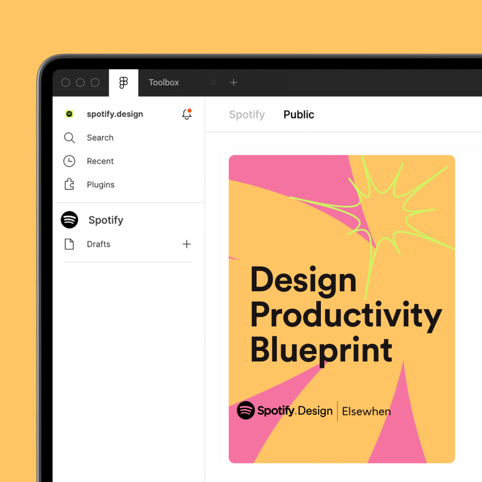
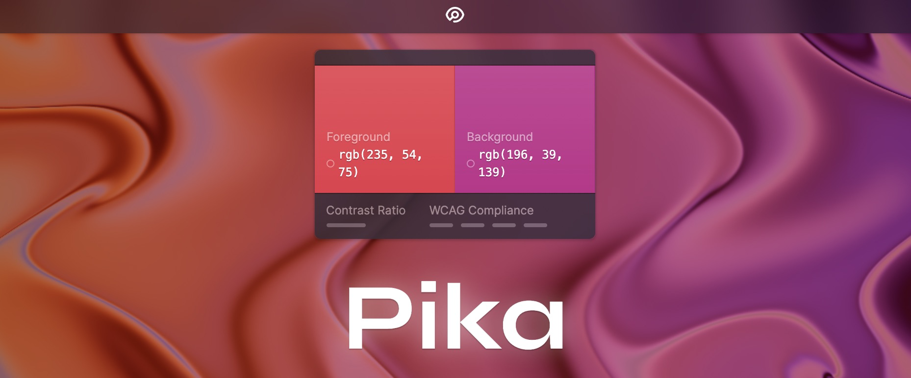
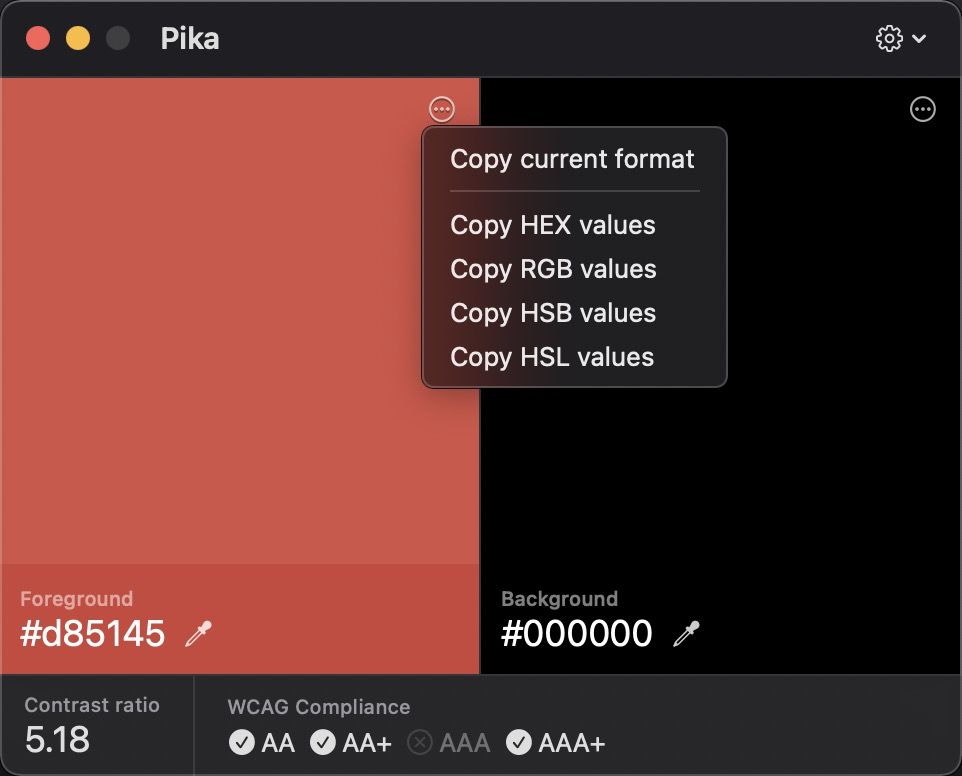
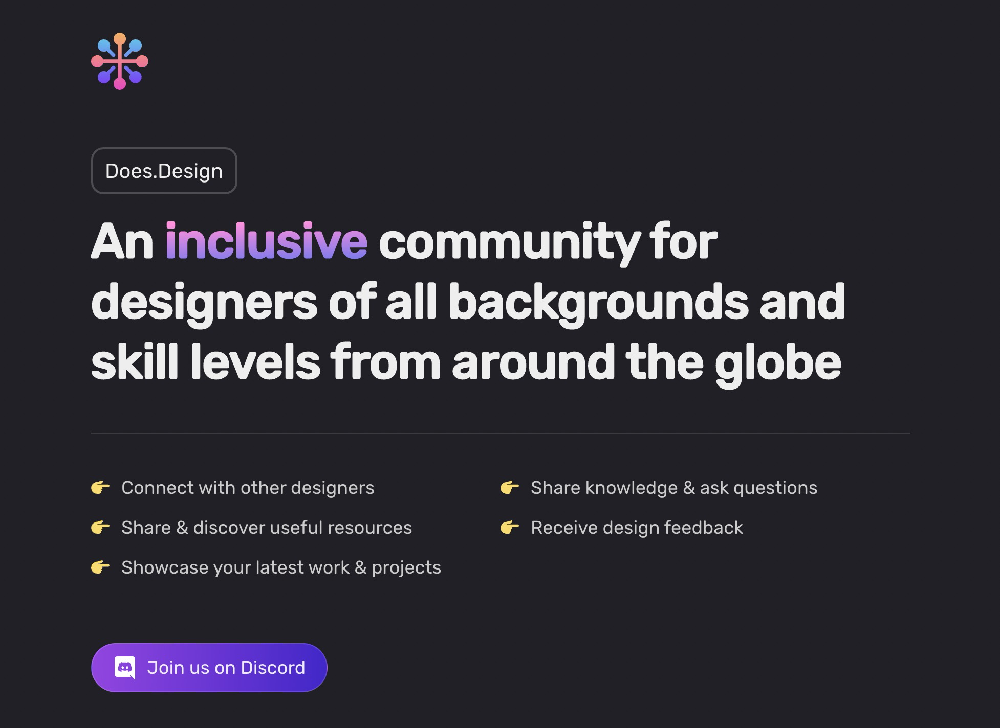
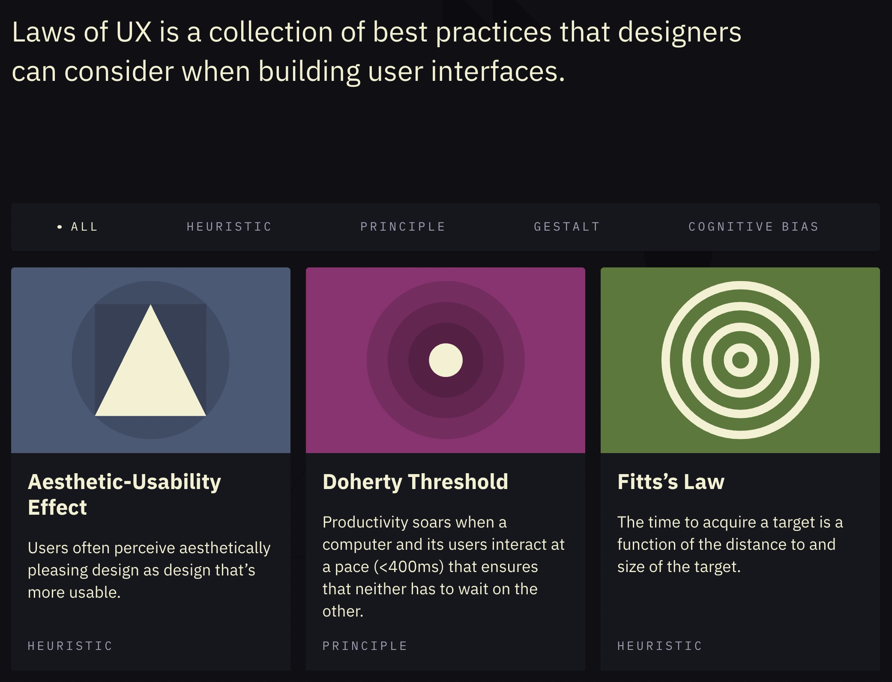
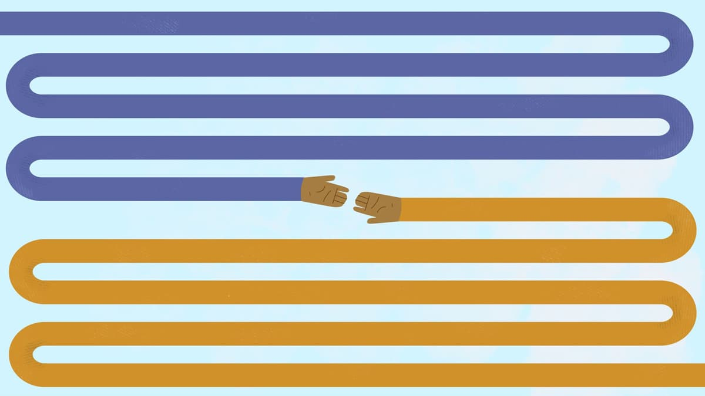
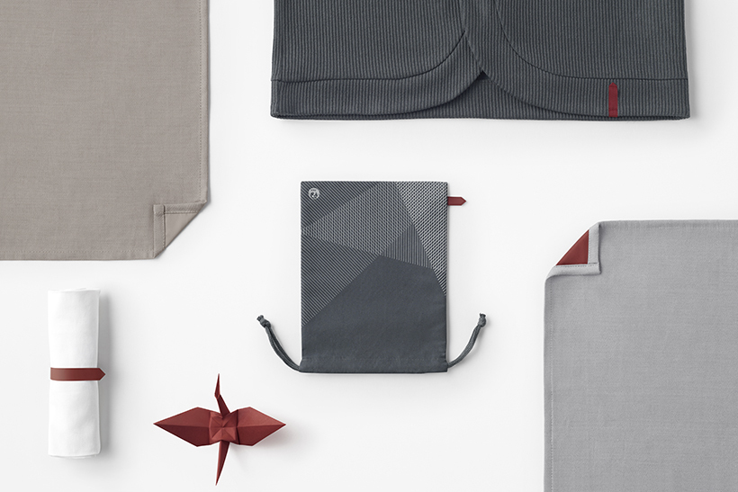
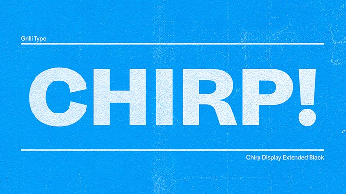
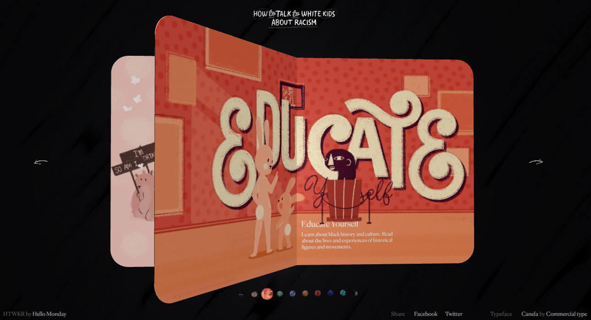

设计周刊 Design Weekly #45
📕 设计资源
Spotify: The Design Productivity Blueprint
https://spotify.design/article/measuring-defining-and-improving-productivity-the-design-productivity
Spotify Design和Elsewhen共同创造了这个工具，以提高工作效率和消除设计工作流程中的障碍。该工具由四个主要部分组成，为设计师创造最好的工作空间，确保设计团队成员将时间用在更高价值的工作上。

Pika
https://superhighfives.com/pika
Salesforce 的 UX 设计负责人 Charlie Gleason 业余时间做的微项目，一款适用于 macOS 的开源无障碍色彩采集器。
关于作者：斜杠青年的多个角色，设计师/开发/音乐家。Super High Five 是他所做的微项目集合。


Does.Design
一个设计社区，面向全球各种背景和技能水平的设计师，在这里你可以和其他设计聊天、学习和分享。

📗 设计文章
Laws of UX 2.0
Laws of UX 发布于 2018 年，目标是启发设计师更方便的学习心理学基础。此次Law of UX 2.0版本的发布，除了页面整体的 UI 重新设计外，对可访问性、可扩展性等多个内容进行了优化。

做好设计服务的 15 条原则
https://matthewstrom.com/writing/service-based-design-org
作者 Matthew Ström 从服务的角度讲述了设计团队如何做好设计。

📘 设计案例
nendo为日本航空设计的这只千纸鹤，藏得可真够深
https://www.topys.cn/article/31422
日本文化里，纸鹤有着非常吉祥寓意，传说折够一千只纸鹤，就能实现愿望。
最近，以这种极具本土特色及美好寓意的手工作品为灵感，nendo为logo是一只红鹤的日本航空（Japan Airlines，JAL）设计了一套飞行套装。

Twitter’s got a new look.
https://blog.twitter.com/en_us/topics/company/2021/imperfect-by-design.html
Twitter 有了一个新的品牌形象，包括一个定制字体 Chirp，一起看看幕后的设计花絮吧。

📙 设计灵感
如何与白人孩子谈论种族歧视
https://howtotalktowhitekidsaboutracism.com/
一本如何与白人孩子谈论种族主义的线上绘本，帮助白人家庭学习如何做出积极的选择，承认偏见，为所有人创造公平。
整个网站以绘本的表现形式，结合裸眼 3D 的翻页效果，与孩子们谈论种族歧视这一严肃话题。愿每个小朋友都可以在一个宽容而平等的世界中成长。
